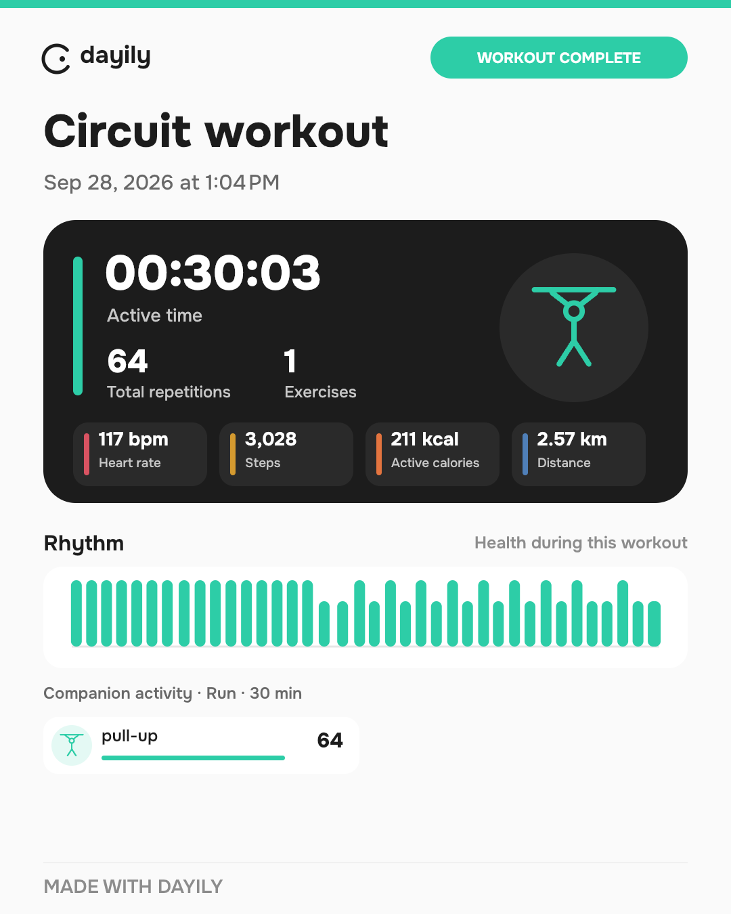

One tap per set
Mark completed work without opening a form or typing your way through a session.
A workout journal for real training
Dayily helps you run circuits and Grease the Groove sessions without turning every set into a phone task. Mark a set, let the rest timer run, and keep your attention where it belongs.
Circuit · pull + dip
During the workout
Dayily is built around what happens between sets: a quick tap, a clear next step, and enough time away from the screen to actually train.
Mark completed work without opening a form or typing your way through a session.
After a set, Dayily counts down rest and reminds you when it is time to continue. The screen can stay awake while you train.
Use bodyweight, additional weight, or assisted and counterweighted exercises in the same workout.
Circuits and GTG
Start with a circuit such as pull-ups and dips, choose the time that suits you, and move through rounds at your own pace. Or use Dayily for GTG: record a few small sets during the day and watch the volume add up.
GTG · today
Keep the log lightweight so you can return to it between the rest of your day.
Your short sessions sit together in the same history as full workouts.
Reminders and rest are there when they help, not as another dashboard to manage.
Dayily as a layer over Health
Train while your watch keeps doing its job. Dayily can bring together your own circuit or GTG log with activities and measurements already available in your device’s health system.
A run from a watch, a ride from another app, a gym session from a connected device — if it reaches the system health record, Dayily can show it beside your Dayily workouts.
When times line up, Dayily can connect a parallel activity to a workout and show available details such as duration, distance, heart rate, or energy.
The data depends on your device, platform, permissions, and what your watch or band records. Nothing is promised as universal.
A real Dayily export
The app can keep the circuit log together with the activity your watch recorded at the same time. The exact metrics depend on your device and permissions.

Free and Premium
Dayily does not put your own workout history behind a paywall. The app is designed to work locally; cloud infrastructure is the part that needs a sustainable plan.
For keeping your training on your phone and using the core Dayily experience.
For people who need a longer cloud history and broader cloud sync across devices.
Premium details and pricing will be decided separately. This website does not sell subscriptions or collect payment information.
What is next
Interactive exercise animation is in development. It is a secondary direction, not the reason to use Dayily today.
Fast logging, rest timing, local history, and reports that bring your activity together.
A visual aid for exercise details, developed carefully and kept separate from the core workout flow.
Good training should not require constant interaction with a phone.
Dayily is a small, practical place for the work you actually do.